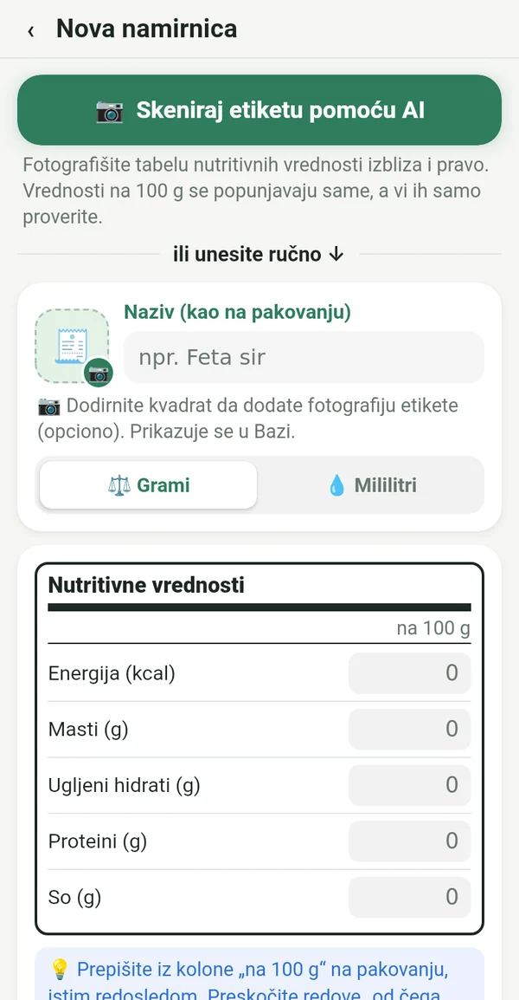
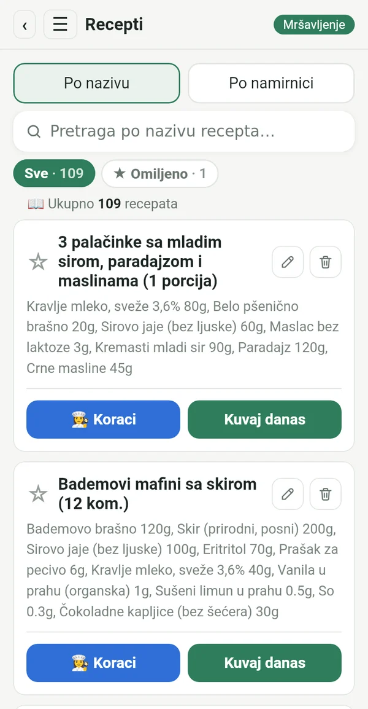
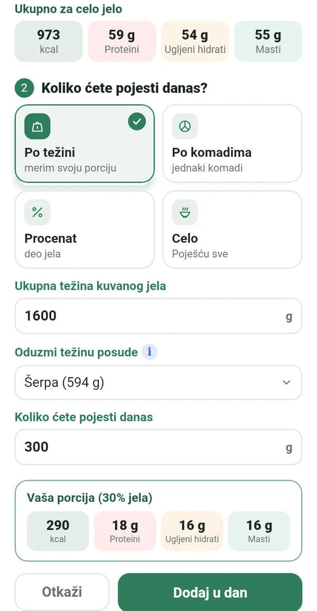
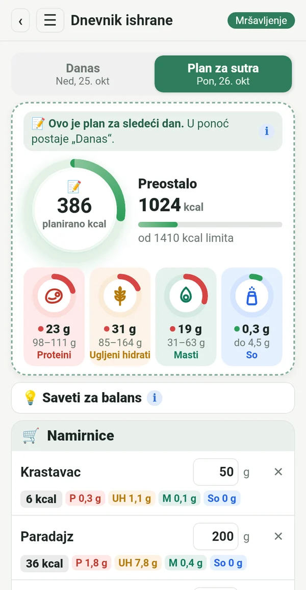
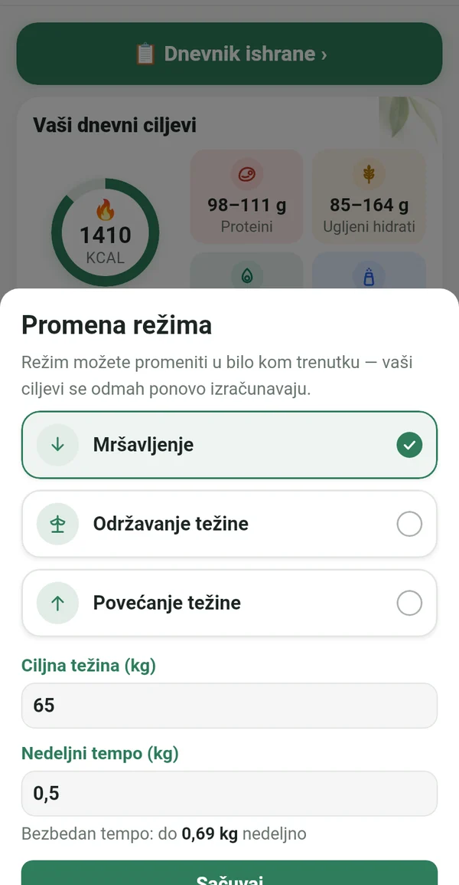
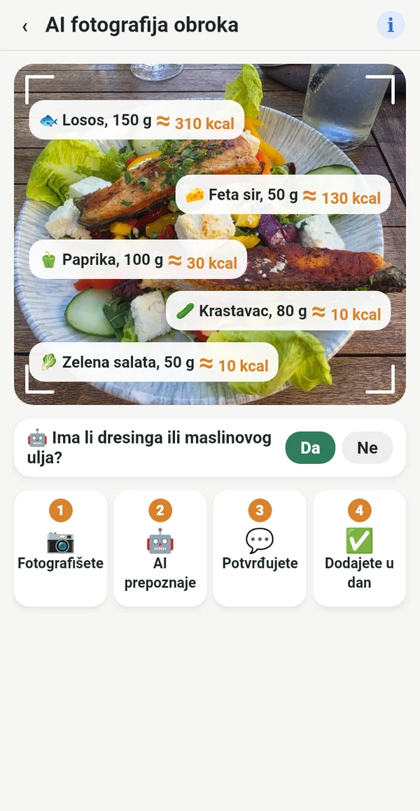

Sve što vam treba, ništa suvišno

Sa etikete, ne iz tuđih baza
Prepišete vrednosti na 100 g sa pakovanja ili jednostavno fotografišete etiketu. Brojevi se poklapaju sa onim što zaista jedete.
📷 AI fotografija etikete popunjava polja umesto vas
Vaša digitalna kuvarica
Recepti iz bakine sveske, iz kuvara na polici i iz omiljenih grupa, svi na jednom mestu. Unesete ih jednom i koristite uvek.

Tačna porcija iz cele šerpe
Izmerite gotovo jelo zajedno sa posudom. Macrolia oduzme posudu i izračuna koliko ste tačno pojeli.

Planirate, kupujete, jedete
Već danas unesete šta ćete jesti sutra. Kupujete samo ono što treba, a u ponoć plan postaje vaš dan.

Mršavljenje, održavanje ili povećanje težine
Kad stignete do cilja, prelazite na „Održavanje težine“. Ako se život promeni, samo promenite režim. Dnevni limit se računa po formuli Mifflin-St Jeor i kliničkim preporukama, bezbednim tempom.

I napolju znate šta jedete
Fotografišete tanjir i AI prepozna šta je na njemu. Vrednost je približna i označena sa ≈. Bolje približno nego nikako.
Kalorije od kretanja
Preko Health Connect, sa telefona, sata ili fitnes aplikacije. Vi birate koliko se dodaje limitu.
Težina, grafikon, izveštaj
Grafikon težine, fotografije pre i posle samo za vas i izveštaj u PDF-u i Excelu.
Saveti za balans
Kratki saveti kad proteini ili masti izađu iz cilja. Pomaže, ne naređuje.
Za svaku koja želi da ostane u režimu
Jo-jo ne dolazi od režima. Dolazi kad prestaneš.
Posle bebe ponovo ulaziš u režim.
Godine nisu razlog da odustaneš.
I u restoranu znaš šta da naručiš.
Ko se tačno drži plana, dobija tačan rezultat.
Vaši podaci su samo vaši
Sve ostaje na vašem telefonu. Bez registracije, reklama i praćenja. Fotografija za AI analizu šalje se samo radi računanja i ne čuva se.
Pretplata
Mesečna ili godišnja pretplata, obe sa 7 dana besplatno. Otkazujete bilo kada na Google Play.
Na 14 jezika, sa svetlom i tamnom temom.
Pitanja
Kada izlazi aplikacija?
Pripremamo objavljivanje na Google Play. Pišite nam i javićemo vam kad bude spremna.
Postoji li verzija za iPhone?
Za sada samo za Android. Verzija za iPhone planirana je kasnije.
Zašto nema skenera bar-koda?
Baze bar-kodova popunjavaju korisnici i često su netačne ili zastarele. U Macroliji svaka vrednost dolazi sa etikete, zato su brojevi tačni.
Koliko AI fotografija mogu da napravim?
Do 100 fotografija mesečno, ukupno za etikete i jela.